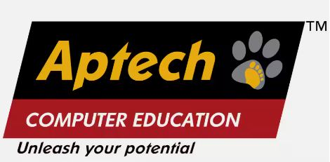

|
EDUCATION
| 01 |
B.Sc. Internet Sciences |
Kurukshetra University |
| 02 |
P.G. Diploma in Computer Applications |
Kurukshetra University |
| 03 |
M.Sc. Computer Science |
Kurukshetra University |
CERTIFICATIONS
| 01 |
MCAD (Microsoft .NET Framework 1.1) |
| 02 |
MCSD (Microsoft .NET Framework 1.1) |
| 03 |
MCTS (Microsoft .NET Framework 2.0: Web Applications) |
| 04 |
MCTS (Microsoft .NET Framework 2.0: Windows Applications) |
| 05 |
MCTS (Microsoft .NET Framework 2.0: Distributed Applications) |
| 06 |
MCPD (Microsoft .NET Framework 2.0: Enterprise Applications Developer) |
| 07 |
MCTS (Microsoft .NET Framework 3.5: Windows Communication Foundation Applications) |
| 08 |
MCTS (Microsoft .NET Framework 3.5: ASP.NET Application Development) |
| 09 |
MCTS (Microsoft .NET Framework 4.0: Web Applications Development) |
| 10 |
MCPD (Microsoft .NET Framework 4.0: Designing and Developing Web Applications) |
| 11 |
MCTS (Microsoft .NET Framework 4.0: Data Access) |
| 12 |
MCTS (SQL Server 2008, Implementation and Maintenance) |
| 13 |
MS (Programming in HTML5 with JavaScript and CSS3) |
| 14 |
MS (Microsoft .NET Framework 4.5: Programming in C#) |
| 15 |
MCSD (Microsoft .NET Framework 4.5: Web Applications) |
| 16 |
MCSD (Microsoft .NET Framework 4.5: Windows Store Apps Using C#) |
TECHNICAL SKILLS
- Machine Learning - AI, ML, Python
- Big Data - Hadoop
- Apache Spark with Python - PySpark
- Python Advanced Concepts
- Programming with Python
- Front-end development with ReactJS
- Front-end development with Angular
- TypeScript Essentials
- Next-Gen Javascript
|
- Cloud Computing
- SQL Server Development - TSQL
- Web Services, WCF and Web API
- ASP.NET Web Forms, ASP.NET MVC, ASP.NET Core MVC
- ASP.NET Core
- ADO.NET, EF, EF Core and LINQ Queries
- Programming with C#
- .NET Framework and .NET Core
- Programming with C, C++ & VC++
|
CAREER TIMELINE
|
 |
|
 |
|
|
|
Hennensy Electronics |
| Feb 2023 - Apr 2025 |
Apr 2022 - Oct 2022 |
Nov 2015 - Apr 2022 |
Dec 2007 - Nov 2015 |
Dec 2004 - Nov 2007 |
Jan 2004 - Nov 2004 |
Aug 1999 - Apr 2004 |
Oct 1994 - Apr 1999 |
Independent Consultant
Client: Huron Consulting Group |
Divisional Manager
Web Applications |
Assistant General Manager
Technology |
Senior Technical Trainer
cum Software Developer |
Senior Corporate Trainer
cum Software Developer |
Senior Technical Editor
|
Trainer
|
Asst. Maintenance Engineer
|
EXPERIENCE
| 01 |
Ascendion Engineering Pvt. Ltd.
Job Title: Independent Consultant
Duration: Apr 2025 - Jun 2025
Job Title: Lead Engineer
Duration: Feb 2023 - Apr 2025
Client: Huron Consulting Group
Duration: Aug-2024 - Jun 2025
Department: Digital-Products-Engineering-Analytics
Projects: HAP, HEPA, shared libraries, and HAMobile (Mobile Apps)
Angular v16 and v18, .NET Core, ASP.NET Core Web API, AWS Services (EC2, Lambda, S3, Secrets Manager, Aurora PostgreSQL), Azure DevOps, Veracode, Git, MAUI.
Client: Huron Consulting Group
Duration: Mar 2023 - Jun 2024
Department: Digital-Products-Engineering-Apps
Projects: Core Services UI and API projects (CoreLib, ActionLogService, Compass, Landing_Web, List, ProfileService, Settings, UAF etc.)
React, Next.js, .NET Core, ASP.NET Core Web API, Aurora PostgreSQL, AWS, Azure DevOps, Veracode, Git.
|
| 02 |
Dish TV India Limited, Delhi
Job Title: Divisional Manager- Web Applications
Duration: Apr 2022 - Oct 2022
|
| 03 |
JINDAL Intellicom Limited, Delhi
Job Title: Assistant General Manager - Technology
Duration: Nov 2015 - Apr 2022
Job Responsibilities:
- Designing Software Architecture
- Doing RnD & creating POCs
- Project Management
- Team Management
- Requirements gathering
- Giving product demo to client
- Doing stand-up meetings with team
- Code writing, code review & code optimization
- Providing help to team members
- Imparting training on .NET and other new Technologies to team members
- Creating training content
- Conducting interviews, assessing interviewee technically
|
| 04 |
Aptech Computer Education, Delhi
Job Title: Senior Technical Trainer cum Software Developer
Duration: Dec 2007 - Nov 2015
Job Responsibilities:
- In-house software projects development
- Imparting Microsoft Certification Trainings on C#, ASP.NET, ASP.NET MVC, ADO.NET, Web Services, WCF, Web APIs, Entity Framework to engineering students and IT professionals
- Handling Corporate Trainings on .NET Technologies
- Providing training to new trainers
- Conducting seminars and technical workshops in engineering colleges
- Creating Training Content and based on the need review and revise the existing content
|
| 05 |
CMC Limited (A TATA Enterprise), Delhi
Job Title: Senior Corporate Trainer cum Software Developer
Duration: Dec 2004 - Nov 2007
Job Responsibilities:
- In-house software projects development
- Imparting Trainings on C#, ASP.NET, ADO.NET, Web Services to engineering students and IT professionals
- Handling Corporate Trainings on .NET Technologies
- Conducting seminars and technical workshops in engineering colleges
- Creating Training Content and based on the need review and revise the existing content
|
| 06 |
EM Media Pvt. Ltd, Delhi
Job Title: Senior Technical Editor
Duration: Jan 2004 - Nov 2004
Job Responsibilities:
- Selecting feature articles for each issue
- Editing and re-writing technical articles
- Commissioning articles from freelance writers
- Sending out briefs to writers, which can include word count and deadline
- Proofreading all pages before going to press
|
| 07 |
Zed Career Academy, Delhi
Job Title: Trainer
Duration: Aug 1999 - Apr 2004
Job Responsibilities:
- Imparting Training on C, C++, VC++, VB, and Data Structures
|
| 08 |
Hennensy Electronics (India), Delhi
Job Title: Asst. Maintenance Engineer
Duration: Oct 1994 - Apr 1999
|
TRAININGS CONDUCTED
| 01 |
Jindal Intellicom Limited (Jan, 2023)
Topic: React v18 (Incl Hooks, React Router & Redux)
Duration: 66 Hrs
Batch Size: 12
Mode: Online
Place: Delhi
|
| 02 |
CDAC - Bytes Softech Pvt Ltd (Dec, 2022)
Topic: MS.NET Technologies
Duration: 84-Hrs
Batch Size: 68
Mode: Offline
Place: Delhi
|
| 03 |
Aegis Informatics Pvt Ltd (Nov, 2022)
Topic: SQL (SQL Server) Advanced, Python for Big Data with PySpark
Duration: 6 Hrs - 15 sessions
Batch Size: 8
Mode: Offline
Place: Delhi
|
| 04 |
Bajaj Finserv Limited - BAJAJ BYTE (October, 2022)
Topic: Web Angular (ASP.NET Core MVC, ASP.NET Core Web API, Angular)
Duration: Full day - 10 sessions
Batch Size: 25
Mode: Offline
Place: Pune
|
| 05 |
Aegis Informatics Pvt Ltd (Aug, 2022)
Topic: Angular 10, Node.js, TypeScript
Duration: 4 Hrs - 12 sessions (Weekend)
Batch Size: 8
Mode: Offline
Place: Delhi
|
| 06 |
Dish TV India Limited (March, 2022)
Topic: ASP.NET Core MVC
Duration: Full day - 8 sessions (Online)
Place: Noida
|
| 07 |
JINDAL Intellicom Limited (December, 2021)
Topic: ASP.NET Core MVC
Duration: 2-3 Hrs - 8 sessions (Online)
Place: Delhi
|
| 08 |
JINDAL Intellicom Limited (January, 2022)
Topic: ASP.NET MVC
Duration: 2-3 Hrs - 12 sessions (Online)
Place: Delhi
|
| 09 |
Keshav Mahavidyalaya - DU (February, 2018)
Topic: Big Data & Hadoop
Duration: 6 Hrs session
Place: Delhi
|
| 10 |
Aptech Computer Education (August, 2017)
Modules: Hadoop, Pig, Hive, HBase, Zookeeper, SQOOP, Spark & Scala
Duration: 15 days, weekend batch
Place: Delhi
|
| 11 |
Aptech Computer Education (October, 2016)
Modules: Hadoop, Pig, Hive, HBase, Zookeeper, SQOOP, Spark & Scala
Duration: 15 days, weekend batch
Place: Delhi
|
| 12 |
JINDAL Intellicom Limited (March, 2016)
Topic: C# & ASP.NET MVC
Duration: 8 weeks
Place: Delhi
|
| 13 |
Wipro Technologies (November, 2015)
Modules: ASP.NET using C#, ASP.NET MVC, Entity Framework, LINQ
Duration: 2 weeks
Place: Cochin, Kerala
|
| 14 |
Wipro Technologies (October, 2015)
Modules: C#.NET, Windows Forms Application, ADO.NET, XML, LINQ, Reporting, SQL Server 2008
Duration: 3 weeks
Place: Cochin, Kerala
|
| 15 |
NIIT Technologies Ltd (April, 2015)
.NET Technical Competencies Evaluation for ANALYST and SPECIALIST roles
Duration: 8 days
Place: Noida, Uttar Pradesh
|
| 16 |
Bank Of America (November, 2014)
Modules: ASP.NET MVC, Entity Framework, Ajax, Web API
Duration: 3 days
Place: Gurgaon, Haryana
|
| 17 |
Aptech Computer Education (June, 2014)
Modules: WCF
Duration: 5 days
Place: Delhi
|
| 18 |
Virginia Transformer Corp (December, 2010)
Modules: VB.NET, Windows Forms Applications, ADO.NET, XML, Printing, Reporting
Duration: 15 days
Place: Delhi
|
| 19 |
Aptech Computer Education (January, 2010)
Modules: Cloud Computing
Duration: 3 days
Place: Delhi
|
| 20 |
Aptech Computer Education (August, 2009)
Modules: C#.NET, ASP.NET using C#.NET, ADO.NET, Web Services, AJAX
Duration: 8 weeks
Place: Delhi
|
| 21 |
Rukmini Devi Institute of Advanced Studies (November, 2007)
Modules: C#.NET, ASP.NET using C#.NET
Duration: 4 weeks
Place: Delhi
|
| 22 |
Maharaja Surajmal Institute of Technology (July, 2007)
Modules: VB.NET, C#.NET, ASP.NET using C#.NET and XML
Duration: 5 weeks
Place: Delhi
|
| 23 |
Maharaja Aggarsen Institute of Technology (May, 2007)
Modules: VB.NET, C#.NET, ASP.NET using C#.NET and XML
Duration: 5 weeks
Place: Delhi
|
| 24 |
MANDO Softtech India Pvt. Ltd. (November 2006)
Modules: Advanced C++ and VC++
Duration: 100 hrs
Place: Gurgaon, Haryana
|
| 25 |
IITM (August, 2006)
Modules: C++, VB.NET, C#.NET and ASP.NET using C#.NET
Duration: 6 weeks
Place: Gwalior, M.P.
|
| 26 |
Guru Premsukh Memorial College Of Engineering (May, 2006)
Modules: C, C++, VB.NET, C#.NET and ASP.NET using C#.NET
Duration: 6 weeks
Place: Delhi
|
SKILLS & ABILITIES
- Having good communication skills.
- Having good grasping power.
- I am responsible, dedicated and sincere to my duties.
- I am thoughtful and creative.
LINKS
LinkedIn Profile: https://www.linkedin.com/in/narendrakrsharma/
|
|
|